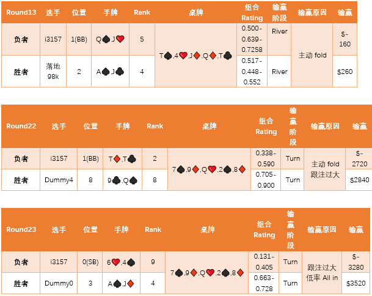
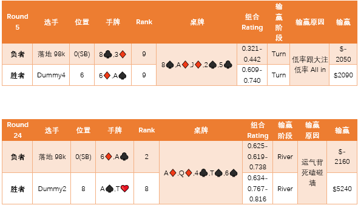
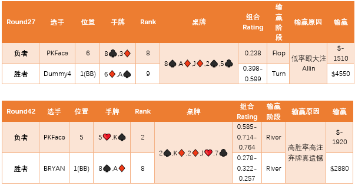
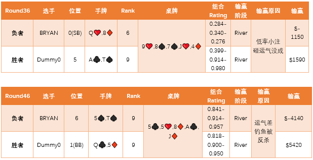

决赛看板
决赛公告
激烈的趋势科技杯德州扑克AI程序大赛落下了帷幕！举办方在此感谢每一位选手的付出与参与，相信通过这次比赛，参赛选手充分感受了算法和代码的魅力，同时也增强了实战和实践能力！
通过层层角逐，大赛决赛排行榜如下：
| Rank | Player | Type | Score |
| 1 | Dummy2 | Dummy | 21920 |
| 2 | Dummy4 | Dummy | 21390 |
| 3 | Liekkas | Student | 11230 |
恭喜liekkas选手获得本次比赛的三等奖！举办方将联系liekkas选手完成后续事宜。
相信大家比赛的目的并不只是为了奖品，所谓高手切磋，华山论剑，没有评论怎么行呢？
高级Dummy开发者有话要说
对于初次接触德州的同学，关注下面几个方面是非常重要的：
1. 规则，包括比牌规则，盲注规则，下注规则等等。
2. 模型，存在几个维度(人数，位置，盲注，手牌，桌牌，下注，筹码，底池)？每个维度都可以进行数据集的分析，它们的关系是什么？
3. 算法，包括概率算法，推测算法，止损算法，平衡算法。
如何合理的建立的你的规则模型很重要，这基于对一定数量有效数据集的深入分析。
本次比赛中的数据，可以做简单的分析，基本不能用作数据集来训练AI。
现在我就简单分析一下几位同学的数据日志（仅分析典型输牌日志，代码无关）：
*手牌Rank： 基于Sklansky Chart算法给出当前选手两张手牌的等级数（等级越小越好）。
*组合Rating: Rating与手牌/桌牌组合，当前剩余玩家数量，当前所处阶段(FLOP-TURN-RIVER)都有直接关系，趋势高级Dummy通过特定的算法，可以推测当前牌面组合所处阶段(FLOP-TURN-RIVER)的胜率高低。
*BB：Big Blind。
*SB：Small Blind。
决赛选手算法分析
选手i3157

综上：
1. 选手的胜率算法在高概率的时候会主动弃牌，低概率会盲目跟注和All in。
2. 跟注未组合考虑自己筹码量和胜率，算法较激进。
3. 没有应用check/raise。（也许这局游戏中恰好没有）
该选手的输牌，同时也反映出，高级Dummy在高胜率情况下进行组合判断，抛出合适的注码钓鱼的优势。
选手落地98k


综上：
1. 该选手只有大盲注<80的时候根据手牌概率call牌，大盲注>80手牌再好也不玩了（除非身为大盲）。
2. 该选手也出现低概率跟大注的情况，胜率没有和注码相结合。
3. 没有考虑到后期完全不玩的话，盲注会导致慢慢全盘皆输。
4. 选手没有用到check逻辑。
另外在log中能看出选手尝试钓鱼，认为自己手牌大的时候，会先下小注后追加大注，只是该选手在自己分析底牌的时候输了两把，接下来就放弃机会了，这样就没有机会翻盘获胜了。
选手PKFace


综上：
1. 选手在和BRYAN的PK中，优势明显；但在BRYAN的check之后的最后关头，却主动弃牌投降，很可能胜率算法有缺陷。
2. 从日志中看出该选手会在牌面较大的时候一直跟注甚至All in来赢得筹码，但主动出击较少。
3. 选手会根据手牌大小选择是否进入Flop，但不够准确，多次在自己是Big Blind的时候弃牌，注码白白损失，丢失Flop机会比较可惜。
4. 选手没有用到check逻辑。
选手BRYAN



综上：
1. 该选手没有在大盲时候跟默认的0注，比赛Round1，手牌很好，但无奈弃牌，丢失大杀四方的机会。
2. 手牌Rank算法对于同样的手牌，出现有时跟牌，有时弃牌。
3. 打法灵活，check应用不错，时而bet，时而call，时而raise，应用比较恰当，可惜胜率算法或用法有失误。
继续优化自己的Rank和Rating算法，阈值合理，AI合理判断当前局势，就会有更大机会。
选手liekkas
该选手基本没有输牌，原因是基本没有玩牌。
选手只有当自认为手牌足够大才会进入Flop，进入Flop获胜只有1次。
第2次赢取筹码是手牌较好，直接All in赢取。
第3次赢取筹码是手牌较好，Deal阶段赢取，PKFace已经无更多筹码，其他选手folds，这也是最后一个Round。

综上：
1. 该选手的手牌Rank算法可能只有几个自己设定的手牌组合。
2. 手牌大的时候All in保证了取胜，但没有更多筹码入账。
3. 也许是决赛选手，包括Dummy水平都比较高，所以避免入局也是一种办法。
4. 该选手check应用不错。
不只是一个纸牌游戏 —— 德州扑克AI的意义
和谷歌研究围棋AI一样，卡内基梅隆大学研究德州扑克AI，也是“志不在此”。因为德州扑克中存在很多和社会生活类似的普遍难题，此研究才有更加重要的意义。

李开复等讲解德扑人机对抗：
德州扑克的AI算法根源上讲是数学的博弈论，目的是获取最优策略（GTO），著名的德州AI Libratus（冷扑，一对一人类无敌手）。冷扑之所以能获胜，就是找到了每一种局面下可以采取某种特定策略，使得可以不再关心对手采用何种策略；简单的说，就是有效避免了德州扑克里面猜来猜去的怪区。德州扑克里面很多局面下最优解的期望值是正数，这就是冷扑打败人类牌手的数学基本出发点。

推荐的参考
《Superhuman AI for heads-up no-limit poker：Libratusbeats top professionals》
《Fundamental Theorem of Poker》
David Sklansky, Phil Gordon的一些决策理论对算法影响颇大。
【趋势科技德州扑克AI程序】大赛组委会